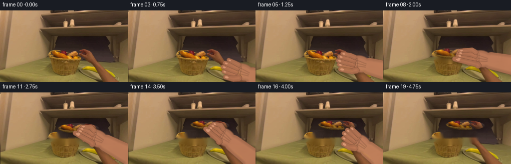
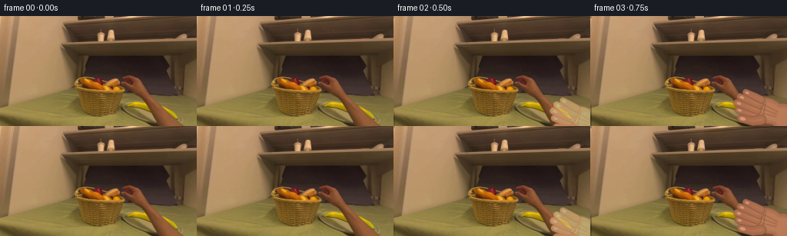
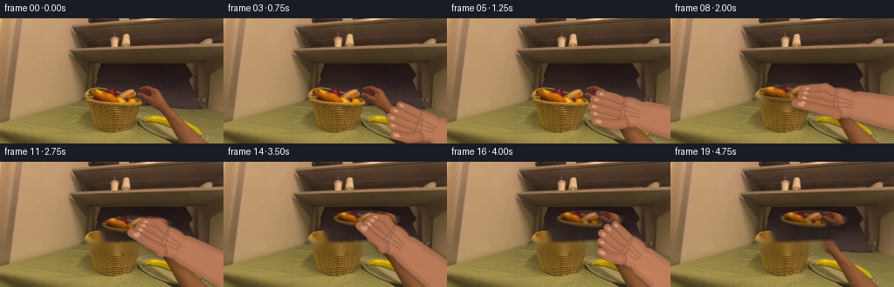
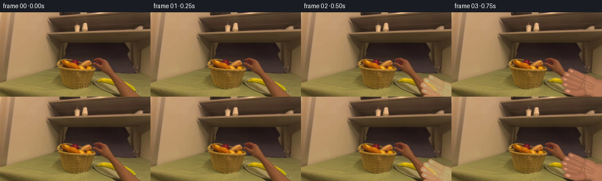
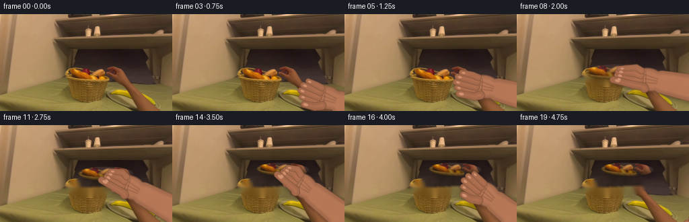
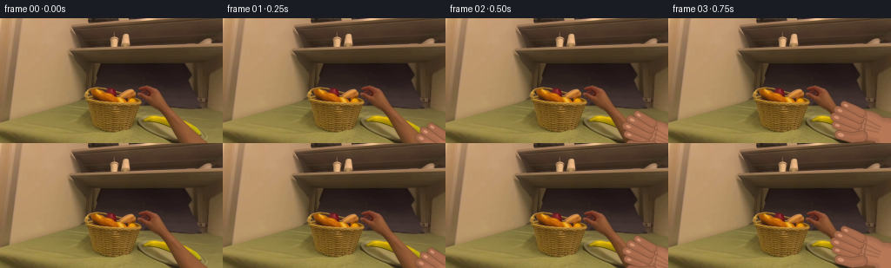

CODING AGENTS AS PIXEL WORLD MODELS
traex/DeepSeek-V4.1-Flash · common50_0018
点击播放 · 原生 RGB 像素
逐轮保存的候选
回放视频、检查图与代码变化。
每份候选均可单独播放。实际图片检查记录在下方工具轨迹中。
候选 01播放与检查图
点击播放 · 原生 RGB 像素


展开代码变化
--- 上一保存版本
+++ 本次保存版本
@@ -0,0 +1,468 @@
+from pathlib import Path
+
+import cv2
+import numpy as np
+from PIL import Image
+
+import artifact_io
+
+
+ROOT = Path(__file__).resolve().parent
+W, H = 256, 144
+N_FRAMES = 20
+FPS = 4
+
+
+def smoothstep(value):
+ value = np.clip(value, 0.0, 1.0)
+ return value * value * (3.0 - 2.0 * value)
+
+
+def lerp(a, b, t):
+ return a + (b - a) * t
+
+
+def point_lerp(a, b, t):
+ return np.asarray(a, np.float32) * (1.0 - t) + np.asarray(b, np.float32) * t
+
+
+def capsule_mask(shape, p0, p1, r0, r1, scale=1.0):
+ """Anti-aliased tapered capsule coverage."""
+ h, w = shape
+ yy, xx = np.mgrid[0:h, 0:w].astype(np.float32)
+ p0 = np.asarray(p0, np.float32) * scale
+ p1 = np.asarray(p1, np.float32) * scale
+ r0, r1 = float(r0) * scale, float(r1) * scale
+ delta = p1 - p0
+ denom = float(delta @ delta) + 1e-6
+ t = np.clip(((xx - p0[0]) * delta[0] + (yy - p0[1]) * delta[1]) / denom, 0.0, 1.0)
+ cx = p0[0] + t * delta[0]
+ cy = p0[1] + t * delta[1]
+ radius = r0 + (r1 - r0) * t
+ distance = np.sqrt((xx - cx) ** 2 + (yy - cy) ** 2)
+ return np.clip(radius - distance + 0.65 * scale, 0.0, 1.0)
+
+
+def ellipse_mask(shape, center, radii, angle=0.0, scale=1.0):
+ h, w = shape
+ yy, xx = np.mgrid[0:h, 0:w].astype(np.float32)
+ cx, cy = np.asarray(center, np.float32) * scale
+ rx, ry = np.asarray(radii, np.float32) * scale
+ theta = np.deg2rad(angle)
+ ct, st = np.cos(theta), np.sin(theta)
+ dx, dy = xx - cx, yy - cy
+ xr = ct * dx + st * dy
+ yr = -st * dx + ct * dy
+ q = np.sqrt((xr / max(rx, 1e-4)) ** 2 + (yr / max(ry, 1e-4)) ** 2)
+ edge = np.minimum(rx, ry) * 0.075 * scale
+ return np.clip((1.0 - q) * np.minimum(rx, ry) / max(edge, 1e-4) + 0.5, 0.0, 1.0)
+
+
+def composite_float(image, color, alpha):
+ alpha = np.clip(alpha, 0.0, 1.0)[..., None]
+ return image * (1.0 - alpha) + np.asarray(color, np.float32) * alpha
+
+
+def composite_rgba(image, rgba):
+ rgb = rgba[..., :3]
+ alpha = rgba[..., 3:4]
+ return image * (1.0 - alpha) + rgb * alpha
+
+
+def soft_shadow(image, mask, offset=(2, 3), radius=3.0, strength=0.34):
+ shifted = np.zeros_like(mask)
+ dx, dy = int(offset[0]), int(offset[1])
+ src_y0, src_y1 = max(0, -dy), min(mask.shape[0], mask.shape[0] - dy)
+ src_x0, src_x1 = max(0, -dx), min(mask.shape[1], mask.shape[1] - dx)
+ shifted[src_y0 + dy:src_y1 + dy, src_x0 + dx:src_x1 + dx] = mask[
+ src_y0:src_y1, src_x0:src_x1
+ ]
+ shadow = cv2.GaussianBlur(shifted, (0, 0), radius)
+ alpha = np.clip(shadow * strength, 0.0, 0.55)[..., None]
+ return image * (1.0 - alpha) + np.array([24, 15, 10], np.float32) * alpha
+
+
+def skin_component(layer, mask, scale, tint=(1.0, 1.0, 1.0), edge_strength=0.25):
+ """Composite one shaded skin part into a premultiplied RGBA layer."""
+ h, w = mask.shape
+ yy, xx = np.mgrid[0:h, 0:w].astype(np.float32)
+ binary = (mask > 0.08).astype(np.uint8)
+ dist = cv2.distanceTransform(binary, cv2.DIST_L2, 5).astype(np.float32) / scale
+ body = 0.78 + 0.20 * np.clip(dist / 8.0, 0.0, 1.0)
+ body += 0.035 * np.clip((h * 0.72 - yy) / h, -1.0, 1.0)
+ texture = (
+ 1.45 * np.sin(xx * 0.071 + yy * 0.041)
+ + 1.15 * np.sin(xx * 0.023 - yy * 0.087 + 1.7)
+ ) / 255.0
+ base = np.array([192.0, 125.0, 91.0], np.float32) * np.asarray(tint, np.float32)
+ color = base[None, None, :] * (body + texture)[..., None]
+
+ edge = np.clip(mask - cv2.erode(mask, np.ones((3, 3), np.float32)), 0.0, 1.0)
+ color *= 1.0 - edge_strength * edge[..., None]
+ highlight = np.clip(mask - cv2.erode(mask, np.ones((9, 9), np.float32)), 0.0, 1.0)
+ color += np.array([18.0, 12.0, 8.0], np.float32) * (0.30 * highlight)[..., None]
+
+ alpha = np.clip(mask * 0.985, 0.0, 1.0)
+ old_rgb = layer[..., :3].copy()
+ old_alpha = layer[..., 3].copy()
+ new_alpha = alpha + old_alpha * (1.0 - alpha)
+ new_rgb = color * alpha[..., None] + old_rgb * (1.0 - alpha[..., None])
+ layer[..., :3] = new_rgb
+ layer[..., 3] = new_alpha
+
+
+def add_nail(layer, center, direction, scale, size=3.2):
+ center = np.asarray(center, np.float32) * scale
+ direction = np.asarray(direction, np.float32)
+ direction /= max(np.linalg.norm(direction), 1e-5)
+ angle = np.degrees(np.arctan2(direction[1], direction[0]))
+ mask = ellipse_mask(
+ layer.shape[:2],
+ center / scale,
+ (size, size * 0.58),
+ angle,
+ scale,
+ )
+ color = np.array([226, 161, 127], np.float32)
+ alpha = mask * 0.70
+ old_rgb = layer[..., :3].copy()
+ old_alpha = layer[..., 3].copy()
+ new_alpha = alpha + old_alpha * (1.0 - alpha)
+ layer[..., :3] = color[None, None, :] * alpha[..., None] + old_rgb * (1.0 - alpha[..., None])
+ layer[..., 3] = new_alpha
+
+
+def render_hand(palm, bread_center, curl, opacity=1.0):
+ """Render a right hand from a palm point toward the bread center."""
+ scale = 2
+ shape = (H * scale, W * scale)
+ layer = np.zeros((H * scale, W * scale, 4), np.float32)
+
+ palm = np.asarray(palm, np.float32)
+ bread_center = np.asarray(bread_center, np.float32)
+ u = bread_center - palm
+ u /= max(np.linalg.norm(u), 1e-5)
+ v = np.array([-u[1], u[0]], np.float32)
+
+ wrist = palm - u * 20.0
+ arm_end = palm - u * 170.0
+ palm_mask = ellipse_mask(shape, palm, (23.0, 17.0), np.degrees(np.arctan2(u[1], u[0])), scale)
+ arm_mask = capsule_mask(shape, wrist, arm_end, 17.0, 27.0, scale)
+ base_mask = np.maximum(palm_mask, arm_mask)
+
+ skin_component(layer, base_mask, scale, tint=(0.98, 0.98, 0.97), edge_strength=0.28)
+
+ # Subtle tendons and a crease make the back of the hand read as anatomy.
+ for offset in (-6.0, 0.0, 6.0):
+ p0 = palm - u * 12.0 + v * offset * 0.55
+ p1 = palm + u * 8.0 + v * offset
+ tendon = capsule_mask(shape, p0, p1, 0.75, 0.45, scale)
+ tendon *= base_mask
+ layer[..., :3] *= 1.0 - 0.11 * tendon[..., None]
+ crease = capsule_mask(
+ shape,
+ palm + u * 3.0 - v * 11.0,
+ palm + u * 7.0 + v * 10.0,
+ 0.85,
+ 0.55,
+ scale,
+ )
+ crease *= base_mask
+ layer[..., :3] *= 1.0 - 0.12 * crease[..., None]
+
+ spreads = (-10.5, -3.7, 3.7, 10.5)
+ lengths = (20.0, 25.0, 24.0, 19.0)
+ finger_masks = []
+ nail_data = []
+ for index, (spread, length) in enumerate(zip(spreads, lengths)):
+ base = palm + u * 13.5 + v * spread
+ open_mid = base + u * (length * 0.48) + v * spread * 0.10
+ open_tip = base + u * length + v * spread * 0.24
+
+ closed_mid = base + u * 8.5 + v * spread * 0.34
+ closed_tip = bread_center + v * spread * 0.62 - u * (1.5 + index * 0.45)
+ mid = point_lerp(open_mid, closed_mid, curl)
+ tip = point_lerp(open_tip, closed_tip, curl)
+
+ radius = (4.6, 5.0, 4.9, 4.4)[index]
+ mask = np.maximum(
+ capsule_mask(shape, base, mid, radius * 1.08, radius, scale),
+ capsule_mask(shape, mid, tip, radius, radius * 0.86, scale),
+ )
+ knuckle = ellipse_mask(shape, mid, (radius * 0.82, radius * 0.72), 0.0, scale)
+ mask = np.maximum(mask, knuckle)
+ finger_masks.append(mask)
+ nail_data.append((point_lerp(mid, tip, 0.83), tip - mid, radius))
+
+ thumb_base = palm + u * 4.0 - v * 14.0
+ thumb_open_mid = thumb_base + u * 10.0 - v * 6.0
+ thumb_open_tip = thumb_base + u * 21.0 - v * 8.5
+ thumb_closed_mid = palm + u * 4.0 - v * 12.0
+ thumb_closed_tip = bread_center - v * 10.0 + u * 4.0
+ thumb_mid = point_lerp(thumb_open_mid, thumb_closed_mid, curl)
+ thumb_tip = point_lerp(thumb_open_tip, thumb_closed_tip, curl)
+ thumb_mask = np.maximum(
+ capsule_mask(shape, thumb_base, thumb_mid, 6.4, 5.7, scale),
+ capsule_mask(shape, thumb_mid, thumb_tip, 5.7, 4.8, scale),
+ )
+ thumb_mask = np.maximum(
+ thumb_mask,
+ ellipse_mask(shape, thumb_mid, (5.3, 4.5), 0.0, scale),
+ )
+
+ for mask in finger_masks:
+ skin_component(layer, mask, scale, tint=(1.00, 0.98, 0.96), edge_strength=0.23)
+ skin_component(layer, thumb_mask, scale, tint=(0.98, 0.96, 0.94), edge_strength=0.24)
+
+ for center, direction, radius in nail_data:
+ add_nail(layer, center, direction, scale, size=radius * 0.60)
+ add_nail(layer, point_lerp(thumb_mid, thumb_tip, 0.86), thumb_tip - thumb_mid, scale, size=3.8)
+
+ layer[..., 3] *= opacity
+ premul = layer[..., :3].copy()
+ alpha = cv2.resize(layer[..., 3], (W, H), interpolation=cv2.INTER_AREA)
+ rgb = cv2.resize(premul, (W, H), interpolation=cv2.INTER_AREA)
+ safe_alpha = np.maximum(alpha, 1e-5)
+ rgb = np.clip(rgb / safe_alpha[..., None], 0.0, 255.0)
+ rgb[alpha < 0.002] = 0.0
+ return np.dstack([rgb, alpha])
+
+
+def bread_mask_local(width, height):
+ shape = (height, width)
+ mask = ellipse_mask(shape, (50.0, 16.0), (45.0, 11.5), -1.5)
+ mask *= ellipse_mask(shape, (18.0, 16.5), (17.0, 10.2), 5.0) * 0.16 + 0.84
+ mask *= ellipse_mask(shape, (82.0, 15.0), (17.0, 10.0), -7.0) * 0.18 + 0.82
+ return mask
+
+
+def make_bread_sprite(source):
+ x0, y0, x1, y1 = 96, 74, 198, 109
+ patch = source[y0:y1, x0:x1].astype(np.float32)
+ alpha = bread_mask_local(x1 - x0, y1 - y0)
+
+ # The source supplies the crumb and crust texture; a restrained top-light
+ # pass gives the extracted loaf consistent form while it is carried.
+ yy, xx = np.mgrid[0:y1 - y0, 0:x1 - x0].astype(np.float32)
+ top_light = np.clip((16.0 - yy) / 20.0, -0.20, 0.26)
+ side_shade = np.clip(np.abs(xx - 50.0) / 52.0, 0.0, 1.0)
+ shade = 1.0 + top_light - 0.10 * side_shade
+ rgb = np.clip(patch * shade[..., None], 0.0, 255.0)
+ return rgb, alpha
+
+
+def composite_bread(image, sprite, center, angle=0.0, scale=1.0, shadow=True):
+ rgb, alpha = sprite
+ h, w = alpha.shape
+ matrix = cv2.getRotationMatrix2D((w * 0.5, h * 0.5), angle, scale)
+ matrix[0, 2] += center[0] - w * 0.5
+ matrix[1, 2] += center[1] - h * 0.5
+ warped_rgb = cv2.warpAffine(rgb, matrix, (W, H), flags=cv2.INTER_LINEAR, borderMode=cv2.BORDER_CONSTANT)
+ warped_a = cv2.warpAffine(alpha, matrix, (W, H), flags=cv2.INTER_LINEAR, borderMode=cv2.BORDER_CONSTANT)
+
+ if shadow:
+ shadow_axes = (int(43 * scale), max(5, int(8 * scale)))
+ image = add_ellipse_shadow(
+ image,
+ (center[0] + 3.0, center[1] + 5.0),
+ shadow_axes,
+ angle,
+ strength=0.38,
+ blur=4.0,
+ )
+ return composite_float(image, warped_rgb, warped_a)
+
+
+def add_ellipse_shadow(image, center, axes, angle, strength=0.3, blur=3.0):
+ mask = ellipse_mask((H, W), center, axes, angle, 1.0)
+ mask = cv2.GaussianBlur(mask, (0, 0), blur)
+ alpha = np.clip(mask * strength, 0.0, 0.55)[..., None]
+ return image * (1.0 - alpha) + np.array([22, 14, 10], np.float32) * alpha
+
+
+def clean_basket(source):
+ mask = np.zeros((H, W), np.uint8)
+ cv2.ellipse(mask, (146, 91), (48, 14), -1.5, 0, 360, 255, -1)
+ mask = cv2.GaussianBlur(mask, (5, 5), 1.2)
+ clean = cv2.inpaint(source.astype(np.uint8), (mask > 30).astype(np.uint8) * 255, 4, cv2.INPAINT_TELEA)
+ clean = clean.astype(np.float32)
+
+ # Replace the smooth inpainting with a little of the basket's local grain.
+ yy, xx = np.mgrid[0:H, 0:W].astype(np.float32)
+ grain = (
+ 1.8 * np.sin(xx * 0.33 + yy * 0.17)
+ + 1.2 * np.sin(xx * 0.09 - yy * 0.43 + 0.8)
+ )
+ region = np.clip(mask.astype(np.float32) / 255.0, 0.0, 1.0)
+ clean += grain[..., None] * region[..., None] * 0.75
+ return np.clip(clean, 0.0, 255.0)
+
+
+def keyed_point(frame, keys):
+ if frame <= keys[0][0]:
+ return np.asarray(keys[0][1], np.float32)
+ if frame >= keys[-1][0]:
+ return np.asarray(keys[-1][1], np.float32)
+ for (f0, p0), (f1, p1) in zip(keys[:-1], keys[1:]):
+ if f0 <= frame <= f1:
+ t = smoothstep((frame - f0) / max(f1 - f0, 1))
+ return point_lerp(p0, p1, t)
+ return np.asarray(keys[-1][1], np.float32)
+
+
+def keyed_scalar(frame, keys):
+ if frame <= keys[0][0]:
+ return float(keys[0][1])
+ if frame >= keys[-1][0]:
+ return float(keys[-1][1])
+ for (f0, v0), (f1, v1) in zip(keys[:-1], keys[1:]):
+ if f0 <= frame <= f1:
+ t = smoothstep((frame - f0) / max(f1 - f0, 1))
+ return float(lerp(v0, v1, t))
+ return float(keys[-1][1])
+
+
+def generate_frames(source):
+ source = source.astype(np.float32)
+ clean = clean_basket(source)
+ sprite = make_bread_sprite(source.astype(np.uint8))
+
+ bread_keys = [
+ (0, (145.0, 91.0)),
+ (7, (145.0, 91.0)),
+ (8, (147.0, 87.0)),
+ (9, (150.0, 82.0)),
+ (10, (154.0, 77.5)),
+ (11, (158.0, 73.0)),
+ (12, (161.5, 69.5)),
+ (13, (164.0, 67.0)),
+ (14, (165.0, 66.5)),
+ (19, (165.0, 66.5)),
+ ]
+ palm_keys = [
+ (1, (263.0, 151.0)),
+ (2, (246.0, 136.0)),
+ (3, (231.0, 124.0)),
+ (4, (219.0, 115.0)),
+ (5, (209.0, 107.5)),
+ (6, (202.0, 102.0)),
+ (7, (197.0, 99.0)),
+ (8, (196.5, 97.0)),
+ (9, (196.0, 95.0)),
+ (10, (195.5, 93.5)),
+ (11, (195.0, 92.5)),
+ (12, (195.0, 91.5)),
+ (13, (195.0, 90.5)),
+ (14, (195.0, 90.0)),
+ (15, (199.0, 94.0)),
+ (16, (211.0, 103.0)),
+ (17, (229.0, 116.0)),
+ (18, (250.0, 132.0)),
+ (19, (269.0, 149.0)),
+ ]
+ curl_keys = [
+ (0, 0.00),
+ (2, 0.02),
+ (4, 0.10),
+ (5, 0.22),
+ (6, 0.55),
+ (7, 0.93),
+ (14, 0.93),
+ (15, 0.28),
+ (16, 0.05),
+ (19, 0.00),
+ ]
+ hand_alpha_keys = [
+ (1, 0.0),
+ (2, 0.52),
+ (3, 0.94),
+ (15, 0.96),
+ (16, 0.90),
+ (17, 0.72),
+ (18, 0.40),
+ (19, 0.0),
+ ]
+ bread_scale_keys = [
+ (0, 1.0),
+ (7, 1.0),
+ (13, 0.86),
+ (14, 0.85),
+ (19, 0.85),
+ ]
+ bread_angle_keys = [
+ (0, 0.0),
+ (7, 0.0),
+ (10, -1.5),
+ (14, -3.0),
+ (19, -3.0),
+ ]
+
+ frames = np.zeros((N_FRAMES, H, W, 3), np.uint8)
+ for frame in range(N_FRAMES):
+ bread_center = keyed_point(frame, bread_keys)
+ bread_scale = keyed_scalar(frame, bread_scale_keys)
+ bread_angle = keyed_scalar(frame, bread_angle_keys)
+
+ if frame <= 7:
+ image = source.copy()
+ else:
+ image = clean.copy()
+ image = composite_bread(
+ image,
+ sprite,
+ bread_center,
+ bread_angle,
+ bread_scale,
+ shadow=True,
+ )
+
+ palm = keyed_point(frame, palm_keys)
+ curl = keyed_scalar(frame, curl_keys)
+ hand_alpha = keyed_scalar(frame, hand_alpha_keys)
+ if hand_alpha > 0.005:
+ hand = render_hand(palm, bread_center, curl, hand_alpha)
+
+ # A soft cast shadow anchors the hand to the basket or plate.
+ shadow_mask = cv2.GaussianBlur(hand[..., 3], (0, 0), 3.2)
+ shadow_mask = np.roll(np.roll(shadow_mask, 3, axis=0), 2, axis=1)
+ shadow_alpha = np.clip(shadow_mask * 0.34, 0.0, 0.42)[..., None]
+ image = image * (1.0 - shadow_alpha) + np.array([24, 15, 11], np.float32) * shadow_alpha
+
+ image = composite_rgba(image, hand)
+
+ # A restrained vignette in the moving frames helps unify the composited
+ # hand and carried object without altering the source frame.
+ if frame > 0:
+ yy, xx = np.mgrid[0:H, 0:W].astype(np.float32)
+ radial = ((xx - W * 0.5) / (W * 0.72)) ** 2 + ((yy - H * 0.5) / (H * 0.76)) ** 2
+ vignette = np.clip((radial - 0.55) * 0.10, 0.0, 0.055)
+ image *= 1.0 - vignette[..., None]
+
+ frames[frame] = np.clip(np.rint(image), 0, 255).astype(np.uint8)
+
+ frames[0] = source.astype(np.uint8)
+ return frames
+
+
+def main():
+ source = np.array(Image.open(ROOT / "first_frame.png").convert("RGB"), dtype=np.uint8)
+ assert source.shape == (H, W, 3)
+ frames = generate_frames(source)
+ artifact_io.save(frames, ROOT)
+
+ # A convenient review artifact; the contract payload is still pixels.npz
+ # and frames/*.png written by artifact_io.save.
+ writer = cv2.VideoWriter(
+ str(ROOT / "preview.mp4"),
+ cv2.VideoWriter_fourcc(*"mp4v"),
+ FPS,
+ (W, H),
+ )
+ if writer.isOpened():
+ for frame in frames:
+ writer.write(cv2.cvtColor(frame, cv2.COLOR_RGB2BGR))
+ writer.release()
+
+
+if __name__ == "__main__":
+ main()
候选 02播放与检查图
点击播放 · 原生 RGB 像素


展开代码变化
--- 上一保存版本
+++ 本次保存版本
@@ -70,6 +70,13 @@
def soft_shadow(image, mask, offset=(2, 3), radius=3.0, strength=0.34):
+ shifted = shift_mask(mask, offset)
+ shadow = cv2.GaussianBlur(shifted, (0, 0), radius)
+ alpha = np.clip(shadow * strength, 0.0, 0.55)[..., None]
+ return image * (1.0 - alpha) + np.array([24, 15, 10], np.float32) * alpha
+
+
+def shift_mask(mask, offset):
shifted = np.zeros_like(mask)
dx, dy = int(offset[0]), int(offset[1])
src_y0, src_y1 = max(0, -dy), min(mask.shape[0], mask.shape[0] - dy)
@@ -77,9 +84,7 @@
shifted[src_y0 + dy:src_y1 + dy, src_x0 + dx:src_x1 + dx] = mask[
src_y0:src_y1, src_x0:src_x1
]
- shadow = cv2.GaussianBlur(shifted, (0, 0), radius)
- alpha = np.clip(shadow * strength, 0.0, 0.55)[..., None]
- return image * (1.0 - alpha) + np.array([24, 15, 10], np.float32) * alpha
+ return shifted
def skin_component(layer, mask, scale, tint=(1.0, 1.0, 1.0), edge_strength=0.25):
@@ -240,6 +245,21 @@
x0, y0, x1, y1 = 96, 74, 198, 109
patch = source[y0:y1, x0:x1].astype(np.float32)
alpha = bread_mask_local(x1 - x0, y1 - y0)
+ hsv = cv2.cvtColor(source[y0:y1, x0:x1], cv2.COLOR_RGB2HSV)
+ color_support = (
+ (hsv[..., 0] >= 4)
+ & (hsv[..., 0] <= 34)
+ & (hsv[..., 1] >= 62)
+ & (hsv[..., 2] >= 48)
+ ).astype(np.uint8)
+ color_support = cv2.morphologyEx(
+ color_support, cv2.MORPH_CLOSE, np.ones((5, 5), np.uint8)
+ )
+ color_support = cv2.morphologyEx(
+ color_support, cv2.MORPH_OPEN, np.ones((3, 3), np.uint8)
+ )
+ support = cv2.GaussianBlur(color_support.astype(np.float32), (0, 0), 1.4)
+ alpha *= np.clip(support * 1.10 + 0.22, 0.0, 1.0)
# The source supplies the crumb and crust texture; a restrained top-light
# pass gives the extracted loaf consistent form while it is carried.
@@ -424,7 +444,7 @@
# A soft cast shadow anchors the hand to the basket or plate.
shadow_mask = cv2.GaussianBlur(hand[..., 3], (0, 0), 3.2)
- shadow_mask = np.roll(np.roll(shadow_mask, 3, axis=0), 2, axis=1)
+ shadow_mask = shift_mask(shadow_mask, (2, 3))
shadow_alpha = np.clip(shadow_mask * 0.34, 0.0, 0.42)[..., None]
image = image * (1.0 - shadow_alpha) + np.array([24, 15, 11], np.float32) * shadow_alpha
候选 03播放与检查图
点击播放 · 原生 RGB 像素


展开代码变化
--- 上一保存版本
+++ 本次保存版本
@@ -378,7 +378,7 @@
(16, (211.0, 103.0)),
(17, (229.0, 116.0)),
(18, (250.0, 132.0)),
- (19, (269.0, 149.0)),
+ (19, (285.0, 166.0)),
]
curl_keys = [
(0, 0.00),
@@ -393,14 +393,9 @@
(19, 0.00),
]
hand_alpha_keys = [
- (1, 0.0),
- (2, 0.52),
- (3, 0.94),
- (15, 0.96),
- (16, 0.90),
- (17, 0.72),
- (18, 0.40),
- (19, 0.0),
+ (0, 0.0),
+ (1, 1.0),
+ (19, 1.0),
]
bread_scale_keys = [
(0, 1.0),
@@ -450,14 +445,6 @@
image = composite_rgba(image, hand)
- # A restrained vignette in the moving frames helps unify the composited
- # hand and carried object without altering the source frame.
- if frame > 0:
- yy, xx = np.mgrid[0:H, 0:W].astype(np.float32)
- radial = ((xx - W * 0.5) / (W * 0.72)) ** 2 + ((yy - H * 0.5) / (H * 0.76)) ** 2
- vignette = np.clip((radial - 0.55) * 0.10, 0.0, 0.055)
- image *= 1.0 - vignette[..., None]
-
frames[frame] = np.clip(np.rint(image), 0, 255).astype(np.uint8)
frames[0] = source.astype(np.uint8)
可观测工具轨迹
实际执行的命令与返回图片。
命令 1exit 0
/bin/bash -c "pwd && rg --files -g '"'!*__pycache__*'"' | sed -n '1,160p'"
命令 2exit 0
/bin/bash -c "sed -n '1,240p' prompt.txt"
命令 3exit 0
/bin/bash -c "sed -n '1,280p' GENERATION_RULES.md"
命令 4exit 0
/bin/bash -c "find . -maxdepth 2 -type f -printf '%p %s bytes\\n' | sort | sed -n '1,200p'"
命令 5exit 0
/bin/bash -c "sed -n '1,260p' artifact_io.py"
命令 6exit 0
/bin/bash -c "cat task_spec.json && printf '\\n--- player ---\\n' && sed -n '1,260p' player_template.html"
命令 7exit 0
/bin/bash -c "python - <<'PY'
from PIL import Image
im=Image.open('first_frame.png')
print(im.mode, im.size)
print(im.getpixel((128,72)))
PY"命令 8exit 0
/bin/bash -c "python - <<'PY' import importlib.util for m in ['numpy','PIL','cv2','scipy','skimage']: print(m, bool(importlib.util.find_spec(m))) PY"
命令 9exit 0
/bin/bash -c "python - <<'PY'
from PIL import Image
import numpy as np
im=np.array(Image.open('first_frame.png'))
# print RGB at grid every 16 px
for y in range(0,144,12):
row=[]
for x in range(0,256,16):
p=im[y:y+12,x:x+16].reshape(-1,3).mean(0).astype(int)
row.append('%02x%02x%02x'%tuple(p))
print(f'{y:3d}', ' '.join(row))
PY"命令 10exit 0
/bin/bash -c "python - <<'PY'
from PIL import Image
import numpy as np
im=np.array(Image.open('first_frame.png')).astype(float)
# quantization using PIL adaptive palette, print dominant colors
q=Image.fromarray(im.astype('uint8')).quantize(colors=20, method=Image.Quantize.MEDIANCUT)
pal=np.array(q.getpalette()).reshape(-1,3)
cnt=np.bincount(np.array(q).ravel(), minlength=20)
for i in np.argsort(cnt)[::-1]:
print(f'{cnt[i]:6d} {tuple(pal[i])}')
PY"命令 11exit 0
/bin/bash -c "python - <<'PY'
from PIL import Image
im=Image.open('first_frame.png')
# nearest-neighbor upscale and also an annotated coordinate grid
im.resize((1024,576),Image.Resampling.NEAREST).save('.tmp/first_x4.png')
from PIL import ImageDraw
big=im.resize((1024,576),Image.Resampling.NEAREST)
d=ImageDraw.Draw(big)
for x in range(0,257,16):
d.line((x*4,0,x*4,576),fill=(255,0,255),width=1)
d.text((x*4+2,2),str(x),fill=(255,255,255))
for y in range(0,145,16):
d.line((0,y*4,1024,y*4),fill=(255,0,255),width=1)
d.text((2,y*4+2),str(y),fill=(255,255,255))
big.save('.tmp/first_grid.png')
print('saved')
PY"命令 12exit 0
/bin/bash -c "python - <<'PY'
from PIL import Image
import numpy as np
im=np.array(Image.open('first_frame.png'))
# sample exact colors and blocks. report row run categories based on kmeans centers maybe save edges
import cv2
lab=cv2.cvtColor(im,cv2.COLOR_RGB2LAB)
# canny edge stats and save
edge=cv2.Canny(im,35,90)
Image.fromarray(edge).resize((1024,576),Image.Resampling.NEAREST).save('.tmp/edges_x4.png')
# print colors at points
pts=[(20,10),(120,10),(220,10),(20,60),(120,60),(220,60),(20,100),(120,100),(220,100),(20,135),(120,135),(220,135),(60,85),(90,95),(120,105),(160,110),(210,85)]
for x,y in pts: print((x,y),im[y,x])
PY"命令 13exit 0
/bin/bash -c "python - <<'PY'
import cv2, numpy as np
from PIL import Image
im=np.array(Image.open('first_frame.png'))
# kmeans Lab, print center RGB and count
pix=im.reshape(-1,3).astype(np.float32)
crit=(cv2.TERM_CRITERIA_EPS+cv2.TERM_CRITERIA_MAX_ITER,80,0.2)
_,lab,cent=cv2.kmeans(pix,10,None,crit,10,cv2.KMEANS_PP_CENTERS)
cent=cent.astype(np.uint8)
for i,c in sorted(enumerate(cent),key=lambda z: np.bincount(lab.ravel())[z[0]], reverse=True):
print(i,tuple(int(v) for v in c),int((lab==i).sum()))
# nearest sample average per 8x4 block mapped to dominant kmeans
small=np.array(Image.fromarray(im).resize((64,36),Image.Resampling.BOX))
D=((small[:,:,None,:].astype(float)-cent[None,None,:,:])**2).sum(-1)
labels=D.argmin(2)
# chars based luminance and rough hue
chars=' .:-=+*#%@'
for row in labels:
print(''.join(chars[min(9,int(np.dot(small[y,x],[.299,.587,.114])/256*10))] for x,y in [(x,0) for x in range(64)]) )
# instead list labels A-J
letters='ABCDEFGHIJ'
print('labels:')
for row in labels: print(''.join(letters[i] for i in row))
PY"命令 14exit 0
/bin/bash -c "python - <<'PY'
from PIL import Image
import numpy as np, cv2
im=np.array(Image.open('first_frame.png'))
g=cv2.cvtColor(im,cv2.COLOR_RGB2GRAY)
e=cv2.Canny(im,30,90)
# use 2x2 blocks average edge density
for y in range(0,144,4):
s=''
for x in range(0,256,2):
v=e[y:y+4,x:x+2].mean()
s += ' ' if v<8 else '.' if v<30 else ':' if v<65 else '+' if v<100 else '#'
print(s)
PY"命令 15exit 0
/bin/bash -c "python - <<'PY'
from PIL import Image
import numpy as np
im=np.array(Image.open('first_frame.png'))
# print coarse ascii of hue/sat/light using HSV
import cv2
hsv=cv2.cvtColor(im,cv2.COLOR_RGB2HSV)
for y in range(0,144,4):
s=''
for x in range(0,256,4):
h,sa,v=np.median(hsv[y:y+4,x:x+4],axis=(0,1))
if v<55: c='K'
elif v<90: c='d'
elif sa<35: c='.'
elif h<12 or h>170: c='R'
elif h<22: c='o'
elif h<35: c='y'
elif h<55: c='Y'
elif h<85: c='g'
elif h<125: c='B'
else: c='P'
s+=c
print(s)
PY"命令 16exit 0
/bin/bash -c "python - <<'PY'
from PIL import Image
import numpy as np
im=np.array(Image.open('first_frame.png'))
# Estimate strong saturation golden bread pixels and dark plate pixels with masks, bbox and stats
import cv2
hsv=cv2.cvtColor(im,cv2.COLOR_RGB2HSV)
H,S,V=cv2.split(hsv)
for name,m in [
('gold',(H<28)&(S>120)&(V>80)),
('gold2',(H<35)&(S>100)&(V>60)),
('dark',(V<50)),
('plate',(S<35)&(V<75)&(np.indices(V.shape)[0]>65)),
('basket',(S>50)&(V<90)&(np.indices(V.shape)[0]<110)),
]:
ys,xs=np.where(m)
print(name,len(xs),'bbox', (xs.min(),ys.min(),xs.max(),ys.max()) if len(xs) else None, 'mean',im[m].mean(0) if len(xs) else None)
# components
num,l,st,cent=cv2.connectedComponentsWithStats(((H<35)&(S>110)&(V>80)).astype('uint8'),8)
for i in np.argsort(st[:,4])[::-1][1:15]: print(i, st[i].tolist(), cent[i])
PY"命令 17exit 0
/bin/bash -c "python - <<'PY'
from PIL import Image
import numpy as np, cv2
im=np.array(Image.open('first_frame.png'))
# crops upscaled separately to infer object locations
for name,box in [('left',(0,0,128,144)),('right',(128,0,256,144)),('center',(60,40,200,130)),('bottom',(0,80,256,144))]:
x0,y0,x1,y1=box
Image.fromarray(im[y0:y1,x0:x1]).resize(((x1-x0)*6,(y1-y0)*6),Image.Resampling.NEAREST).save('.tmp/'+name+'.png')
print('done')
PY"命令 18exit 0
/bin/bash -c "python - <<'PY'
import cv2, numpy as np
from PIL import Image
im=np.array(Image.open('first_frame.png'))
pix=im.reshape(-1,3).astype(np.float32)
crit=(cv2.TERM_CRITERIA_EPS+cv2.TERM_CRITERIA_MAX_ITER,100,0.2)
_,lab,cent=cv2.kmeans(pix,16,None,crit,20,cv2.KMEANS_PP_CENTERS)
lab=lab.reshape(144,256)
for i in np.argsort([(lab==j).sum() for j in range(16)])[::-1]:
ys,xs=np.where(lab==i)
print(f'{i:2d} n={len(xs):5d} rgb={tuple(cent[i].astype(int))} bbox=({xs.min()},{ys.min()},{xs.max()},{ys.max()}) center=({xs.mean():.1f},{ys.mean():.1f})')
PY"命令 19exit 0
/bin/bash -c "python - <<'PY'
from PIL import Image
import numpy as np, cv2
im=np.array(Image.open('first_frame.png'))
# median blur then kmeans into 8 and print map at 2x2 coarse
sm=cv2.medianBlur(im,5)
pix=sm.reshape(-1,3).astype(np.float32)
_,lab,cent=cv2.kmeans(pix,8,None,(cv2.TERM_CRITERIA_EPS+cv2.TERM_CRITERIA_MAX_ITER,100,0.2),10,cv2.KMEANS_PP_CENTERS)
lab=lab.reshape(144,256)
# sort by color luminance descending
order=np.argsort(cent.dot([.299,.587,.114]))
letters='12345678'
mp={int(v):letters[i] for i,v in enumerate(order)}
print([(letters[i],tuple(cent[v].astype(int))) for i,v in enumerate(order)])
for y in range(0,144,4):
print(''.join(mp[int(np.bincount(lab[y:y+4,x:x+4].ravel()).argmax())] for x in range(0,256,4)))
PY"命令 20exit 0
/bin/bash -c "python - <<'PY'
import cv2, numpy as np
from PIL import Image
im=np.array(Image.open('first_frame.png'))
g=cv2.cvtColor(im,cv2.COLOR_RGB2GRAY)
e=cv2.Canny(im,30,90)
# strongest vertical/horiz line segments via Hough
lines=cv2.HoughLinesP(e,1,np.pi/180,threshold=18,minLineLength=15,maxLineGap=4)
arr=[]
for l in lines[:,0]:
x1,y1,x2,y2=map(int,l)
dx=x2-x1;dy=y2-y1
ang=np.degrees(np.arctan2(dy,dx)); ln=(dx*dx+dy*dy)**.5
arr.append((ln,ang,x1,y1,x2,y2))
for z in sorted(arr,reverse=True)[:80]: print('len=%5.1f ang=%6.1f (%d,%d)-(%d,%d)'%z)
PY"命令 21exit 1
/bin/bash -c "python - <<'PY'
from PIL import Image
import numpy as np
im=np.array(Image.open('first_frame.png')).astype(float)
# region means at 8x8 tiles in hex, arranged labels with coordinates each 16 px
for y in range(0,144,8):
print(f'y={y:3d}',end=' ')
for x in range(0,256,8):
p=im[y:y+8,x:x+8].mean(0)
print('%02x%02x%02x'%tuple(p.astype(int)),end=' ')
print()
PY"命令 22exit 0
/bin/bash -c "python - <<'PY'
from PIL import Image
import numpy as np
im=np.array(Image.open('first_frame.png')).astype(float)
for y in range(0,144,8):
print(f'y={y:3d}',end=' ')
for x in range(0,256,8):
p=im[y:y+8,x:x+8].mean((0,1)).astype(int)
print('%02x%02x%02x'%tuple(p),end=' ')
print()
PY"命令 23exit 0
/bin/bash -c "python - <<'PY'
from PIL import Image
import numpy as np, cv2
im=np.array(Image.open('first_frame.png'))
# Inspect original 144x256 for likely loaf via color clustering, save masks
hsv=cv2.cvtColor(im,cv2.COLOR_RGB2HSV)
H,S,V=cv2.split(hsv)
mask=((H>5)&(H<30)&(S>130)&(V>80)).astype(np.uint8)*255
# restrict bottom scene below 75
mask[:75]=0
# close and comps
mask=cv2.morphologyEx(mask,cv2.MORPH_CLOSE,np.ones((3,3),np.uint8))
num,labels,stats,cents=cv2.connectedComponentsWithStats(mask,8)
for i in np.argsort(stats[:,4])[::-1][1:12]:
print(i,stats[i].tolist(),cents[i])
Image.fromarray((labels==i).astype('uint8')*255).resize((1024,576),Image.Resampling.NEAREST).save(f'.tmp/comp{i}.png')
PY"命令 24exit 0
/bin/bash -c "python - <<'PY'
from PIL import Image
import numpy as np
im=np.array(Image.open('first_frame.png'))
# classify plate using color: near neutral/dark bluish in upper right; print grayscale + masks
for y in range(40,120,2):
s=''
for x in range(90,245,2):
r,g,b=im[y:y+2,x:x+2].mean((0,1))
if r-g<14 and g-b<20 and r<100 and b<70: c='P'
elif r<60: c='k'
else: c='.'
s+=c
print(f'{y:3d}',s)
PY"命令 25exit 0
/bin/bash -c "python - <<'PY'
from PIL import Image
import numpy as np
im=np.array(Image.open('first_frame.png'))
# exact per row region mean in plate area and lower basket
for y in range(40,125,4):
print(y, [(x, tuple(im[y:y+4,x:x+8].mean((0,1)).astype(int))) for x in range(100,240,20)])
PY"命令 26exit 0
/bin/bash -c "python - <<'PY'
from PIL import Image
import numpy as np
im=np.array(Image.open('first_frame.png'))
# score each 32x16 tile by mean saturation/hue vs plate center
for y in range(0,144,16):
print('y',y)
for x in range(0,256,32):
p=im[y:y+16,x:x+32].reshape(-1,3)
print(x,tuple(p.mean(0).astype(int)), 'std',tuple(p.std(0).astype(int)), 'dark%',round((p.mean(1)<65).mean()*100))
PY"命令 27exit 0
/bin/bash -c "python - <<'PY'
from PIL import Image
import numpy as np, cv2
im=np.array(Image.open('first_frame.png'))
sm=cv2.medianBlur(im,5)
pix=sm.reshape(-1,3).astype(np.float32)
_,lab,cent=cv2.kmeans(pix,8,None,(cv2.TERM_CRITERIA_EPS+cv2.TERM_CRITERIA_MAX_ITER,100,0.2),10,cv2.KMEANS_PP_CENTERS)
lab=lab.reshape(144,256)
order=np.argsort(cent.dot([.299,.587,.114])); letters='12345678'; mp={int(v):letters[i] for i,v in enumerate(order)}
for y in range(76,136,2):
vals=[mp[int(np.bincount(lab[y:y+2,x:x+2].ravel()).argmax())] for x in range(80,240,2)]
runs=[]; st=0
for i in range(1,len(vals)+1):
if i==len(vals) or vals[i]"'!=vals[st]:
if vals[st] in '"'746': runs.append((80+st*2,80+i*2,vals[st]))
st=i
print(f'y={y:3d}', ' '.join(f'{a}-{b}:{c}' for a,b,c in runs))
PY"命令 28exit 0
/bin/bash -c "python - <<'PY'
from PIL import Image
import numpy as np, cv2
im=np.array(Image.open('first_frame.png'))
hsv=cv2.cvtColor(im,cv2.COLOR_RGB2HSV); H,S,V=cv2.split(hsv)
# Make plausible bread mask: saturated yellow/orange in lower half, y>75
m=((H>=7)&(H<=30)&(S>=120)&(V>=65)).astype(np.uint8)
m[:76]=0
m=cv2.morphologyEx(m,cv2.MORPH_CLOSE,np.ones((3,3),np.uint8))
m=cv2.morphologyEx(m,cv2.MORPH_OPEN,np.ones((3,3),np.uint8))
num,l,st,cent=cv2.connectedComponentsWithStats(m,8)
for i in np.argsort(st[:,4])[::-1][1:8]:
print(i, st[i].tolist(),cent[i])
# save outline overlay
out=im.copy(); out[m>0]=(out[m>0]*0.4+np.array([0,255,0])*0.6).astype('uint8')
Image.fromarray(out).resize((1024,576),Image.Resampling.NEAREST).save('.tmp/bread_mask.png')
PY"命令 29exit 0
/bin/bash -c "python - <<'PY'
from PIL import Image
import numpy as np
im=np.array(Image.open('first_frame.png'))
# summarize near exact colors in region 90:240,78:145 quantized 8 levels
for q in [8,16,24,32]:
a=(im[78:145,90:240]//q)*q
u,c=np.unique(a.reshape(-1,3),axis=0,return_counts=True)
print('q',q)
for i in np.argsort(c)[::-1][:15]: print(tuple(u[i]),c[i])
PY"命令 30exit 0
/bin/bash -c "python - <<'PY'
from PIL import Image
import numpy as np
im=np.array(Image.open('first_frame.png'))
# render posterized image with 12 labels and coordinate grid more visibly
q=Image.fromarray(im).quantize(colors=12,method=Image.Quantize.MEDIANCUT)
pal=np.array(q.getpalette()).reshape(-1,3)
a=pal[np.array(q)]
a=Image.fromarray(a.astype('uint8')).resize((1536,864),Image.Resampling.NEAREST)
from PIL import ImageDraw
d=ImageDraw.Draw(a)
for x in range(0,257,8):
d.line((x*6,0,x*6,864),fill=(255,255,255),width=1)
d.text((x*6+1,1),str(x),fill=(255,255,255))
for y in range(0,145,8):
d.line((0,y*6,1536,y*6),fill=(255,255,255),width=1)
d.text((1,y*6+1),str(y),fill=(255,255,255))
a.save('.tmp/poster_grid.png')
print(list(enumerate(map(tuple,pal))))
PY"命令 31exit 0
/bin/bash -c "python - <<'PY'
from PIL import Image
import numpy as np
im=np.array(Image.open('first_frame.png'))
# inspect region 100:230,80:140 grayscale ascii with scale 4 pixels each char, use luma classes
for y in range(78,140,2):
s=''
for x in range(90,240,2):
v=im[y:y+2,x:x+2].mean()
s += ' ' if v<45 else '.' if v<70 else ':' if v<100 else '+' if v<130 else '*' if v<160 else '#' if v<190 else '@'
print(f'{y:3d}',s)
PY"命令 32exit 0
/bin/bash -c "python - <<'PY'
from PIL import Image
import numpy as np, cv2
im=np.array(Image.open('first_frame.png'))
# Isolate long loaf perhaps y 80-100 x 100-230 via HSV hue and high saturation, then row span threshold
hsv=cv2.cvtColor(im,cv2.COLOR_RGB2HSV); H,S,V=cv2.split(hsv)
for y in range(78,124):
xs=np.where((H[y]>5)&(H[y]<32)&(S[y]>125)&(V[y]>60))[0]
xs=xs[(xs>90)&(xs<240)]
# print spans
runs=[]
if len(xs):
st=xs[0];prev=xs[0]
for x in xs[1:]:
if x>prev+1:runs.append((int(st),int(prev)));st=x
prev=x
runs.append((int(st),int(prev)))
print(y,runs)
PY"命令 33exit 0
/bin/bash -c "python - <<'PY'
from PIL import Image
import numpy as np, cv2
im=np.array(Image.open('first_frame.png'))
# find edge map around bread; print segmentation overlay with proposed long loaf bbox in red and candidate other breads
out=im.copy()
# proposed loaf rough quadrilateral/ellipse x 94-190 y 81-102
mask=np.zeros(im.shape[:2],np.uint8)
cv2.ellipse(mask,(141,91),(50,10),4,0,360,255,-1)
out[mask>0]=(out[mask>0]*.5+np.array([255,0,255])*.5).astype(np.uint8)
Image.fromarray(out).resize((1024,576),Image.Resampling.NEAREST).save('.tmp/loaf_proposal.png')
PY"命令 34exit 0
/bin/bash -c "python - <<'PY'
from PIL import Image
import numpy as np
im=np.array(Image.open('first_frame.png')).astype(float)
# print gradient orientation strength in bread region; top horizontal edges
import cv2
g=cv2.cvtColor(im.astype('uint8'),cv2.COLOR_RGB2GRAY)
gx=cv2.Sobel(g,cv2.CV_32F,1,0,ksize=3); gy=cv2.Sobel(g,cv2.CV_32F,0,1,ksize=3)
mag=np.sqrt(gx*gx+gy*gy)
for y in range(78,112,2):
s=''
for x in range(90,240,2):
m=mag[y:y+2,x:x+2].mean(); v=g[y:y+2,x:x+2].mean()
if m<20:c=' '
elif m<50:c='.'
elif m<90:c=':'
elif m<140:c='+'
else:c='#'
s+=c
print(f'{y:3d}',s)
PY"命令 35exit 0
/bin/bash -c "python - <<'PY'
from PIL import Image
import numpy as np
im=np.array(Image.open('first_frame.png'))
# print RGB at y=92 for x every 4
for y in [84,88,92,96,100,104]:
print('y',y)
for x in range(90,241,4):
print(x,tuple(im[y,x]),end='; ')
print()
PY"命令 36exit 0
/bin/bash -c "python - <<'PY'
from PIL import Image
import numpy as np
im=np.array(Image.open('first_frame.png'))
# show color-name map 4x4 using nearest among centers
centers=np.array([[188,150,108],[129,103,59],[147,127,71],[86,64,40],[45,32,27],[195,139,21],[128,87,44],[100,79,45]],dtype=float)
names='BCGYDKRO'
for y in range(0,144,4):
s=''
for x in range(0,256,4):
p=im[y:y+4,x:x+4].mean((0,1))
d=((centers-p)**2).sum(1)
s+=names[d.argmin()]
print(f'{y:3d}',s)
PY"命令 37exit 0
/bin/bash -c "python - <<'PY'
from PIL import Image
import numpy as np
im=np.array(Image.open('first_frame.png')).astype(float)
# local line analysis along x y 78-108: for each y, list strongest luma transitions, plus rgb averages in loaf candidate range
for y in range(78,110):
row=im[y].mean(1)
# smooth
sm=np.convolve(row,np.ones(3)/3,'same')
grad=np.abs(np.diff(sm))
inds=np.where(grad>18)[0]
inds=inds[(inds>90)&(inds<240)]
# group
runs=[]
if len(inds):
st=prev=inds[0]
for x in inds[1:]:
if x>prev+2:runs.append((st,prev));st=x
prev=x
runs.append((st,prev))
print(y,runs)
PY"命令 38exit 0
/bin/bash -c "python - <<'PY'
from PIL import Image
import numpy as np, cv2
im=np.array(Image.open('first_frame.png'))
# smooth heavily then canny to reveal boundaries
sm=cv2.GaussianBlur(im,(7,7),1.5)
e=cv2.Canny(sm,20,50)
for y in range(70,140,2):
s=''
for x in range(0,256,2):
s += '#' if e[y:y+2,x:x+2].max() else ' '
print(f'{y:3d}',s)
PY"命令 39exit 0
/bin/bash -c "python - <<'PY'
from PIL import Image
import numpy as np
im=np.array(Image.open('first_frame.png'))
# Print row means of color for y 78..108 and bbox segment where high R, high saturation
for y in range(78,110,2):
p=im[y].astype(float)
r,g,b=p.T
score=(r-g)+(r-b)*0.4
inds=np.where(score>90)[0]
inds=inds[(inds>85)&(inds<245)]
print(y,'mean',tuple(p.mean(0).astype(int)),'hot runs', end=' ')
runs=[]
if len(inds):
st=prev=inds[0]
for x in inds[1:]:
if x>prev+2:runs.append((int(st),int(prev)));st=x
prev=x
runs.append((int(st),int(prev)))
print(runs)
PY"命令 40exit 0
/bin/bash -c "python - <<'PY'
from PIL import Image
import numpy as np, cv2
im=np.array(Image.open('first_frame.png'))
# compute grabcut rectangle candidate object loaf (100,78)-(195,102), seed FG high saturation center, BG outside
mask=np.zeros(im.shape[:2],np.uint8)
rect=(95,76,205,106)
bgd=np.zeros((1,65),np.float64);fgd=np.zeros((1,65),np.float64)
try:
cv2.grabCut(im,mask,rect,bgd,fgd,4,cv2.GC_INIT_WITH_RECT)
out=np.where(((mask==1)|(mask==3))[...,None],im,np.array([0,255,0]))
Image.fromarray(out.astype('uint8')).resize((1024,576),Image.Resampling.NEAREST).save('.tmp/grabcut.png')
print('mask',np.sum((mask==1)|(mask==3)))
except Exception as e: print(e)
PY"命令 41exit 0
/bin/bash -c "python - <<'PY'
from PIL import Image
import numpy as np
im=np.array(Image.open('first_frame.png'))
# compare x/y row color blocks around region, plus estimate mask by y boundary at each x using largest vertical saturation jump
for x in range(94,201,4):
p=im[75:110,x].astype(float)
sat=p.max(1)-p.min(1)
# print sat values encoded 0-9
print(f'x{x:3d}', ''.join(str(min(9,int(v/20))) for v in sat))
PY"命令 42exit 0
/bin/bash -c "python - <<'PY'
from PIL import Image
import numpy as np, cv2
im=np.array(Image.open('first_frame.png'))
hsv=cv2.cvtColor(im,cv2.COLOR_RGB2HSV)
# encode h/s/v for selected region at 2px blocks using HSV; hue bins chars, lower case low sat
for y in range(76,108,2):
s=''
for x in range(90,202,2):
h,sa,v=np.median(hsv[y:y+2,x:x+2],axis=(0,1))
if v<50:c=' '
elif sa<50:c='.'
elif h<8:c='R'
elif h<13:c='O'
elif h<20:c='o'
elif h<28:c='Y'
elif h<38:c='y'
else:c='g'
s+=c
print(f'{y:3d}',s)
PY"命令 43exit 0
/bin/bash -c "python - <<'PY'
from PIL import Image
import numpy as np
im=np.array(Image.open('first_frame.png'))
# candidate long loaf segment based on hue Y at y 80-100; connected components of mask y76:110 hue <30, sat >80, but print spans per row
import cv2
hsv=cv2.cvtColor(im,cv2.COLOR_RGB2HSV); H,S,V=cv2.split(hsv)
for thr in [(7,30,100,60),(5,35,80,60),(7,30,60,80)]:
m=((H>=thr[0])&(H<=thr[1])&(S>=thr[2])&(V>=thr[3])).astype(np.uint8)
m[:78]=0;m[106:]=0
num,l,st,cent=cv2.connectedComponentsWithStats(m,8)
print('thr',thr)
for i in np.argsort(st[:,4])[::-1][1:6]: print(i,st[i].tolist(),cent[i])
PY"命令 44exit 0
/bin/bash -c 'python generate.py'
命令 45exit 0
/bin/bash -c "python - <<'PY'
from PIL import Image
import numpy as np
f=np.array(Image.open('first_frame.png'))
g=np.array(Image.open('frames/00.png'))
print('frame0 exact', np.array_equal(f,g), 'maxdiff',np.abs(f.astype(int)-g.astype(int)).max())
for i in [1,2,4,6,7,8,10,12,14,16,18,19]:
im=np.array(Image.open(f'frames/{i:02d}.png'))
print(i, 'mean',im.mean((0,1)).round(1), 'dark%', round((im.mean(2)<55).mean()*100,1))
PY"命令 46exit 0
/bin/bash -c "python - <<'PY'
from PIL import Image
import numpy as np
frames=[np.array(Image.open(f'frames/{i:02d}.png')) for i in range(20)]
# 5x4 contact sheet at 2x nearest with labels
from PIL import ImageDraw
W,H=256,144
sheet=Image.new('RGB',(W*4*2,(H+20)*5*2),(22,24,28)); d=ImageDraw.Draw(sheet)
for i,im in enumerate(frames):
x=(i%4)*W*2;y=(i//4)*(H+20)*2
d.text((x+4,y+2),f'{i:02d} {i/4:.2f}s',fill='white')
sheet.paste(Image.fromarray(im).resize((W*2,H*2),Image.Resampling.NEAREST),(x,y+20*2))
sheet.save('inspection_all.png')
# motion crops around hand/bread at 4x
crops=[]
for i in [0,2,4,6,7,8,10,12,14,15,16,18]:
im=Image.open(f'frames/{i:02d}.png').crop((70,40,256,144)).resize((744,416),Image.Resampling.NEAREST)
crops.append((i,im))
sheet2=Image.new('RGB',(744*3,436*4),(22,24,28));d=ImageDraw.Draw(sheet2)
for j,(i,im) in enumerate(crops):
x=(j%3)*744;y=(j//3)*436
d.text((x+4,y+2),str(i),fill='white');sheet2.paste(im,(x,y+20))
sheet2.save('.tmp/motion_crops.png')
print('done')
PY"命令 47exit 0
/bin/bash -c "python - <<'PY'
from PIL import Image
import numpy as np
im=np.array(Image.open('frames/10.png'))
# dominant colors and semantic dark mask around hand
q=Image.fromarray(im).quantize(colors=16)
pal=np.array(q.getpalette()).reshape(-1,3);cnt=np.bincount(np.array(q).ravel(),minlength=16)
for i in np.argsort(cnt)[::-1][:12]: print(cnt[i],pal[i])
PY"命令 48exit 0
/bin/bash -c "python - <<'PY'
from PIL import Image
import numpy as np
im=np.array(Image.open('frames/10.png'))
# skin mask red-orange where r-g >45, r-b>70, y<135
m=(im[:,:,0].astype(int)-im[:,:,1]>42)&(im[:,:,0].astype(int)-im[:,:,2]>65)&(np.indices(im.shape[:2])[0]<136)
ys,xs=np.where(m)
print('skin',len(xs),'bbox',xs.min(),ys.min(),xs.max(),ys.max(),'center',xs.mean(),ys.mean())
# print per-row span
for y in range(55,145,4):
x=np.where(m[y])[0]
if len(x):print(y,x.min(),x.max(),len(x))
PY"命令 49exit 0
/bin/bash -c "python - <<'PY'
from PIL import Image
import numpy as np
im=np.array(Image.open('frames/10.png'))
# report skin mask separated: difference against source to locate generated hand; save diff image
src=np.array(Image.open('first_frame.png'))
d=np.abs(im.astype(int)-src.astype(int)).sum(2)
Image.fromarray(np.clip(d,0,255).astype('uint8')).resize((1024,576),Image.Resampling.NEAREST).save('.tmp/diff10.png')
# bbox changed
ys,xs=np.where(d>20)
print(xs.min(),ys.min(),xs.max(),ys.max(),len(xs))
PY"命令 50exit 0
/bin/bash -c "python - <<'PY'
from PIL import Image
import numpy as np, cv2
for i in [0,7,10,14,19]:
im=np.array(Image.open(f'frames/{i:02d}.png'))
# exact skin segmentation from render colors using HSV hue 5-17, sat>60, and y>50
hsv=cv2.cvtColor(im,cv2.COLOR_RGB2HSV)
m=((hsv[:,:,0]>4)&(hsv[:,:,0]<18)&(hsv[:,:,1]>65)&(hsv[:,:,2]>90)).astype('uint8')
# remove known left light bread: x<90
m[:,:90]=0
num,l,st,c=cv2.connectedComponentsWithStats(m,8)
print('frame',i)
for j in np.argsort(st[:,4])[::-1][1:6]: print(st[j].tolist(),c[j])
PY"命令 51exit 0
/bin/bash -c "python - <<'PY'
from PIL import Image
import numpy as np, cv2
# use output difference and skin color to print symbolic map at 2x2
for fi in [2,4,6,8,10,12,14,16,18]:
im=np.array(Image.open(f'frames/{fi:02d}.png'))
hsv=cv2.cvtColor(im,cv2.COLOR_RGB2HSV)
skin=(hsv[:,:,0]>3)&(hsv[:,:,0]<18)&(hsv[:,:,1]>45)&(hsv[:,:,2]>80)
# exclude static top bread and far left
skin[:55]=False
skin[:,:90]=False
bread=(hsv[:,:,0]>=8)&(hsv[:,:,0]<=32)&(hsv[:,:,1]>100)&(hsv[:,:,2]>65)
bread[:55]=False; bread[:,:90]=False
print('\\nFRAME',fi)
for y in range(50,144,3):
s=''
for x in range(80,256,3):
if skin[y:y+3,x:x+3].mean()>.35:c='H'
elif bread[y:y+3,x:x+3].mean()>.45:c='B'
else:
v=im[y:y+3,x:x+3].mean()
c=' ' if v<55 else '.' if v<95 else ':' if v<140 else '+'
s+=c
print(f'{y:3d}',s)
PY"命令 52exit 0
/bin/bash -c "python - <<'PY'
import generate, numpy as np
from PIL import Image
src=np.array(Image.open('first_frame.png'))
sprite=generate.make_bread_sprite(src)
for fi in [0,4,7,8,10,12,14,16,18]:
bc=generate.keyed_point(fi,[(0,(145,91)),(7,(145,91)),(8,(147,87)),(9,(150,82)),(10,(154,77.5)),(11,(158,73)),(12,(161.5,69.5)),(13,(164,67)),(14,(165,66.5)),(19,(165,66.5))])
palm=generate.keyed_point(fi,[(1,(263,151)),(2,(246,136)),(3,(231,124)),(4,(219,115)),(5,(209,107.5)),(6,(202,102)),(7,(197,99)),(8,(196.5,97)),(9,(196,95)),(10,(195.5,93.5)),(11,(195,92.5)),(12,(195,91.5)),(13,(195,90.5)),(14,(195,90)),(15,(199,94)),(16,(211,103)),(17,(229,116)),(18,(250,132)),(19,(269,149))])
curl=generate.keyed_scalar(fi,[(0,0),(2,.02),(4,.1),(5,.22),(6,.55),(7,.93),(14,.93),(15,.28),(16,.05),(19,0)])
hand=generate.render_hand(palm,bc,curl,1)
ys,xs=np.where(hand[...,3]>.2)
print(fi,'bread',bc.round(1),'hand bbox', (xs.min(),ys.min(),xs.max(),ys.max()),'pixels',len(xs),'palm',palm.round(1),'curl',round(curl,2))
PY"命令 53exit 0
/bin/bash -c "python - <<'PY'
from PIL import Image
import numpy as np
# compare changed region between frame 6 and frame 7 to understand hand/loaf overlap
for i in [5,6,7,8,9,10,11,12,13,14]:
im=np.array(Image.open(f'frames/{i:02d}.png'))
# bbox pixels red dominant (skin)
s=im.astype(int); m=(s[:,:,0]-s[:,:,1]>35)&(s[:,:,0]-s[:,:,2]>55)&(np.indices(im.shape[:2])[0]>55)
ys,xs=np.where(m)
# exclude broad original top region; lower only
keep=ys>55
ys,xs=ys[keep],xs[keep]
print(i, len(xs), (xs.min(),ys.min(),xs.max(),ys.max()) if len(xs) else None)
PY"命令 54exit 0
/bin/bash -c "python - <<'PY'
from PIL import Image
import numpy as np
for i in [0,7,10,14,16,19]:
im=np.array(Image.open(f'frames/{i:02d}.png')).astype(float)
# select expected skin: y>60 and x>180, print mean in hand band vs source
m=np.zeros(im.shape[:2],bool);m[60:144,180:]=True
p=im[m]
print(i,'mean',p.mean(0).round(1),'p10',np.percentile(p,10,axis=0).round(0),'p90',np.percentile(p,90,axis=0).round(0))
PY"命令 55exit 0
/bin/bash -c "find . -maxdepth 2 -type f -printf '%p %s bytes\\n' | sort"
命令 56exit 1
/bin/bash -c "python - <<'PY'
import numpy as np
from PIL import Image
p=np.load('pixels.npz')['pixels']
print('pixels',p.shape,p.dtype,'range',int(p.min()),int(p.max()))
print('first equals png',np.array_equal(p[:,:,0],np.array(Image.open('frames/00.png'))[...,0]*65536+np.array(Image.open('frames/00.png'))[...,1]*256+np.array(Image.open('frames/00.png'))[...,2]))
# consecutive changed pixel ratios
for i in range(1,20):
a=np.array(Image.open(f'frames/{i-1:02d}.png'));b=np.array(Image.open(f'frames/{i:02d}.png'))
print(i, round((np.any(a"'!=b,axis=2)).mean()*100,2), np.abs(a.astype(int)-b.astype(int)).mean().round(2))
PY'命令 57exit 0
/bin/bash -c "python -m py_compile generate.py && python - <<'PY'
from PIL import Image
im=Image.open('inspection.png')
print('inspection',im.size,im.mode)
im=Image.open('transition_check.png')
print('transition',im.size,im.mode)
PY"命令 58exit 0
/bin/bash -c "python - <<'PY'
from PIL import Image
import numpy as np, cv2
src=np.array(Image.open('first_frame.png'))
fin=np.array(Image.open('frames/19.png'))
d=np.abs(fin.astype(int)-src.astype(int)).sum(2)
ys,xs=np.where(d>18)
print('final changed bbox',xs.min(),ys.min(),xs.max(),ys.max(),'pixels',len(xs),'mean diff',d.mean())
# final region over plate vs basket
for name,(x0,y0,x1,y1) in {'plate':(100,45,235,100),'basket_old':(90,75,205,110),'hand_right':(205,55,256,144)}.items():
print(name,'source mean',src[y0:y1,x0:x1].mean((0,1)).round(1),'final mean',fin[y0:y1,x0:x1].mean((0,1)).round(1))
# Verify delta stream by decoding index payload
import re,json,base64
html=open('index.html').read(); payload=re.search(r\"const DATA=(\\{.*?\\}),W=\",html).group(1)
data=json.loads(payload)
def unpack(s):
b=np.frombuffer(base64.b64decode(s),dtype='<u4').copy();return b
frames=[unpack(data['first'])]
for enc in data['deltas']:
f=frames[-1].copy();p=unpack(enc);i=0
while i<len(p):
st=int(p[i]);cnt=int(p[i+1]);i+=2;f[st:st+cnt]=p[i:i+cnt];i+=cnt
frames.append(f)
ok=True
for i,f in enumerate(frames):
packed=(fin if False else None)
im=np.array(Image.open(f'frames/{i:02d}.png')).astype(np.uint32)
ref=(im[:,:,0]<<16)|(im[:,:,1]<<8)|im[:,:,2]
ok &= np.array_equal(f.reshape(144,256),ref)
print('index delta roundtrip exact',ok)
PY"命令 59exit 0
/bin/bash -c "python generate.py && python - <<'PY'
from PIL import Image
import numpy as np, re, json, base64
src=np.array(Image.open('first_frame.png'))
f0=np.array(Image.open('frames/00.png'))
print('frame0_exact',np.array_equal(src,f0))
frames=np.stack([np.array(Image.open(f'frames/{i:02d}.png')) for i in range(20)])
print('shape',frames.shape,'dtype',frames.dtype)
# decode the packaged player and verify every frame
html=open('index.html').read();data=json.loads(re.search(r\"const DATA=(\\{.*?\\}),W=\",html).group(1))
def unpack(s): return np.frombuffer(base64.b64decode(s),dtype='<u4').copy()
decoded=[unpack(data['first'])]
for enc in data['deltas']:
f=decoded[-1].copy();p=unpack(enc);i=0
while i<len(p):
st,cnt=int(p[i]),int(p[i+1]);i+=2;f[st:st+cnt]=p[i:i+cnt];i+=cnt
decoded.append(f)
ok=True
for i,f in enumerate(decoded):
ref=(frames[i,:,:,0].astype(np.uint32)<<16)|(frames[i,:,:,1].astype(np.uint32)<<8)|frames[i,:,:,2]
ok &= np.array_equal(f.reshape(144,256),ref)
print('player_roundtrip_exact',ok)
# edge-safe shadow check: compare top/bottom edge changes across a moving frame
for i in [7,10,14,18]:
d=np.abs(frames[i].astype(int)-src.astype(int)).sum(2)
print(i,'changed%',round((d>18).mean()*100,2),'left_edge_changed',int((d[:,:4]>18).sum()),'right_edge_changed',int((d[:,-4:]>18).sum()))
PY"命令 60exit 0
/bin/bash -c "rg -n \"hand_alpha_keys|palm_keys|vignette|269|285\" generate.py && sed -n '350,470p' generate.py"
命令 61exit 0
/bin/bash -c "python generate.py && python - <<'PY'
from PIL import Image
import numpy as np, re, json, base64
src=np.array(Image.open('first_frame.png'))
frames=np.stack([np.array(Image.open(f'frames/{i:02d}.png')) for i in range(20)])
print('frame0_exact',np.array_equal(src,frames[0]),'shape',frames.shape,'dtype',frames.dtype)
# packaged stream
html=open('index.html').read();data=json.loads(re.search(r\"const DATA=(\\{.*?\\}),W=\",html).group(1))
def unpack(s): return np.frombuffer(base64.b64decode(s),dtype='<u4').copy()
decoded=[unpack(data['first'])]
for enc in data['deltas']:
f=decoded[-1].copy();p=unpack(enc);i=0
while i<len(p):
st,cnt=int(p[i]),int(p[i+1]);i+=2;f[st:st+cnt]=p[i:i+cnt];i+=cnt
decoded.append(f)
print('roundtrip',all(np.array_equal(f.reshape(144,256),(frames[i,:,:,0].astype(np.uint32)<<16)|(frames[i,:,:,1].astype(np.uint32)<<8)|frames[i,:,:,2]) for i,f in enumerate(decoded)))
# consecutive change and visible skin estimate based on difference from static source
for i in [1,2,4,7,10,14,16,18,19]:
d=np.abs(frames[i].astype(int)-src.astype(int)).sum(2)
ys,xs=np.where(d>24)
print(i,'changed%',round((d>24).mean()*100,2),'bbox', (xs.min(),ys.min(),xs.max(),ys.max()) if len(xs) else None)
# edge bleed
for i in [7,10,14,18,19]:
d=np.abs(frames[i].astype(int)-src.astype(int)).sum(2)
print('edge',i,int((d[:,:4]>18).sum()),int((d[:,-4:]>18).sum()))
PY"命令 62exit 0
/bin/bash -c "python - <<'PY'
from PIL import Image,ImageDraw
import numpy as np
frames=[np.array(Image.open(f'frames/{i:02d}.png')) for i in range(20)]
W,H=256,144
sheet=Image.new('RGB',(W*4*2,(H+20)*5*2),(22,24,28));d=ImageDraw.Draw(sheet)
for i,im in enumerate(frames):
x=(i%4)*W*2;y=(i//4)*(H+20)*2
d.text((x+4,y+2),f'{i:02d} {i/4:.2f}s',fill='white')
sheet.paste(Image.fromarray(im).resize((W*2,H*2),Image.Resampling.NEAREST),(x,y+40))
sheet.save('inspection_all.png')
print('saved inspection_all.png')
PY"命令 63exit 0
/bin/bash -c "python - <<'PY'
from PIL import Image
import numpy as np
# numerical hand presence in hand-only right band: count pixels differing from source
src=np.array(Image.open('first_frame.png')).astype(int)
for i in range(20):
im=np.array(Image.open(f'frames/{i:02d}.png')).astype(int)
d=np.abs(im-src).sum(2)
m=(d>24)
right=m[:,180:].sum(); allc=m.sum()
print(f'{i:02d}: changed={allc:5d} right={right:5d} left={m[:,:90].sum():4d}')
PY"命令 64exit 0
/bin/bash -c "python - <<'PY'
from PIL import Image
import numpy as np
for i in [7,10,14]:
im=np.array(Image.open(f'frames/{i:02d}.png'))
# luminance/rgb samples on intended palm and fingers to verify skin rendered
pts=[(195,90),(215,110),(165,90),(180,95),(150,85)]
print('frame',i)
for x,y in pts: print((x,y),tuple(im[y,x]))
PY"命令 65exit 0
/bin/bash -c "python - <<'PY'
from PIL import Image
import numpy as np
# check bread sprite alpha: print bbox and coverage in each row/col
import generate
src=np.array(Image.open('first_frame.png'))
rgb,a=generate.make_bread_sprite(src)
ys,xs=np.where(a>.2)
print('sprite',a.shape,'bbox',xs.min(),ys.min(),xs.max(),ys.max(),'coverage',len(xs),'max',a.max())
for y in range(a.shape[0]):
n=(a[y]>.2).sum()
if n: print(y,n,np.where(a[y]>.2)[0].min(),np.where(a[y]>.2)[0].max())
PY"命令 66exit 0
/bin/bash -c "python - <<'PY'
from PIL import Image
import numpy as np
import generate
src=np.array(Image.open('first_frame.png'))
rgb,a=generate.make_bread_sprite(src)
# actual RGB bbox of extracted support
print('rgb center',rgb[16,50],rgb[16,10],rgb[16,90])
# final image has bread at center (165,66.5), scale .85 => original sprite center at x=51,y=16.5. Check patch colors
im=np.array(Image.open('frames/14.png'))
for y in range(56,78,2):
print(y, [(x,tuple(im[y,x])) for x in range(125,207,10)])
PY"命令 67exit 0
/bin/bash -c "python - <<'PY'
import cv2, hashlib, numpy as np
from PIL import Image
cap=cv2.VideoCapture('preview.mp4')
frames=[]
while True:
ok,im=cap.read()
if not ok: break
frames.append(cv2.cvtColor(im,cv2.COLOR_BGR2RGB))
cap.release()
print('mp4_frames',len(frames),'fps',cap.get(cv2.CAP_PROP_FPS),'size',frames[0].shape if frames else None)
print('mp4_frame0_match',np.array_equal(frames[0],np.array(Image.open('frames/00.png'))) if frames else False)
for p in ['pixels.npz','index.html','inspection.png','inspection_all.png','preview.mp4']:
b=open(p,'rb').read(); print(p,len(b),hashlib.sha256(b).hexdigest()[:16])
PY"命令 68exit 0
/bin/bash -c "python - <<'PY'
import cv2
cap=cv2.VideoCapture('preview.mp4')
print('opened',cap.isOpened())
print('fps',cap.get(cv2.CAP_PROP_FPS),'count',cap.get(cv2.CAP_PROP_FRAME_COUNT),'delay_ms',cap.get(cv2.CAP_PROP_FRAME_COUNT)*1000/cap.get(cv2.CAP_PROP_FPS))
ok,im=cap.read();print('first read',ok, im.shape if ok else None)
PY"命令 69exit 0
/bin/bash -c "python - <<'PY'
import hashlib, subprocess, sys
names=['pixels.npz','frames/07.png','frames/14.png','index.html']
before={n:hashlib.sha256(open(n,'rb').read()).hexdigest() for n in names}
subprocess.run([sys.executable,'generate.py'],check=True)
after={n:hashlib.sha256(open(n,'rb').read()).hexdigest() for n in names}
print({n:before[n]==after[n] for n in names})
PY"命令 70exit 0
/bin/bash -c 'git status --short 2>/dev/null || true'
命令 71exit 0
/bin/bash -c "python - <<'PY'
import cv2, numpy as np
from PIL import Image
cap=cv2.VideoCapture('preview.mp4')
f=[]
while True:
ok,im=cap.read()
if not ok:break
f.append(cv2.cvtColor(im,cv2.COLOR_BGR2RGB))
cap.release()
a=np.array(Image.open('frames/00.png')).astype(int);b=f[0].astype(int)
print('mp4 frame0 mean abs error',np.abs(a-b).mean().round(3),'max',np.abs(a-b).max())
print('mp4 20 frames / 4fps / 5.0s',len(f),cap.get(cv2.CAP_PROP_FPS),len(f)/4)
PY"命令 72exit 0
/bin/bash -c "python - <<'PY'
from pathlib import Path
from PIL import Image
import numpy as np
p=Path('.')
frames=np.stack([np.array(Image.open(p/'frames'/f'{i:02d}.png').convert('RGB')) for i in range(20)])
assert frames.shape==(20,144,256,3) and frames.dtype==np.uint8
assert np.array_equal(frames[0],np.array(Image.open('first_frame.png').convert('RGB')))
assert (p/'pixels.npz').is_file() and (p/'index.html').is_file()
print('FINAL OK: 20 frames, 256x144, RGB uint8, exact frame 0, payload + player present')
PY"保存候选 3 份；完成命令 72 次；可验证图片返回 0 张。原始 API 响应与完整日志保留在本地。